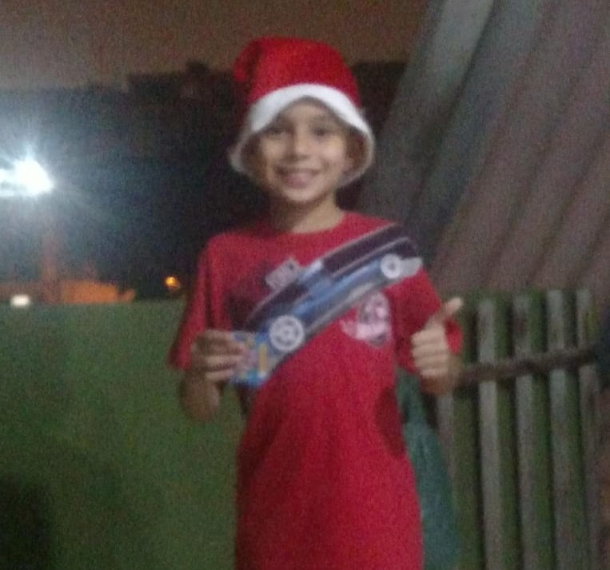

Sou o Erick, tenho 15 anos e moro em Osasco! Atualmente curso o 1º ano do Ensino Médio na Germinare Tech, onde iniciei meus estudos após ser aprovado no processo seletivo de 2024. Tenho grande interesse por tecnologia e inovação, buscando sempre aprender e me desenvolver em diferentes áreas. Sou uma pessoa esforçada, responsável e dedicada, que gosta de aprender e se adaptar a novas situações. Valorizo a franqueza e acredito que o crescimento vem da curiosidade e da vontade de superar desafios. Meu objetivo é evoluir como profissional e como pessoa, aplicando conhecimento e criatividade para contribuir em projetos que gerem impacto positivo e tragam soluções reais por meio da tecnologia.
-
Curiosidades
- Gosto de muitos esportes
- Não escuto músicas
- Sonho em viajar muito pelo mundo
- Prefiro frio ao calor
-
Lugares visitados
- Condeúba, Bahia
- São Francisco, Minas Gerais
- Poços de Caldas, Minas Gerais
- Guarujá, SP
